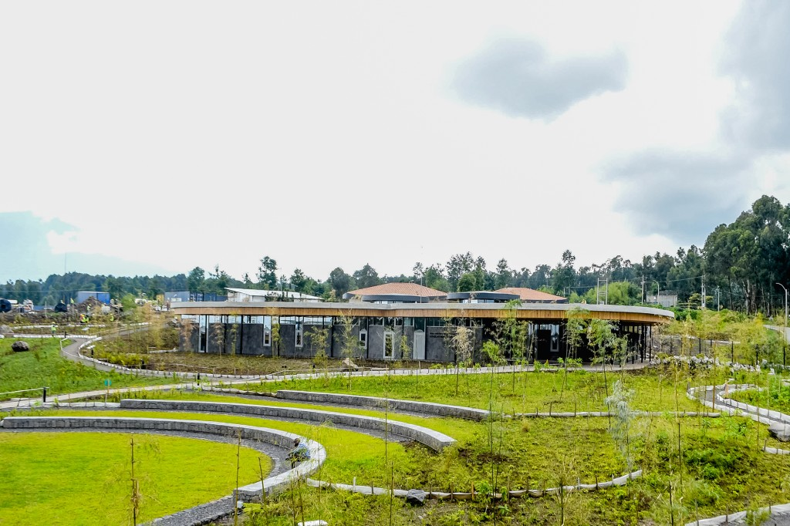
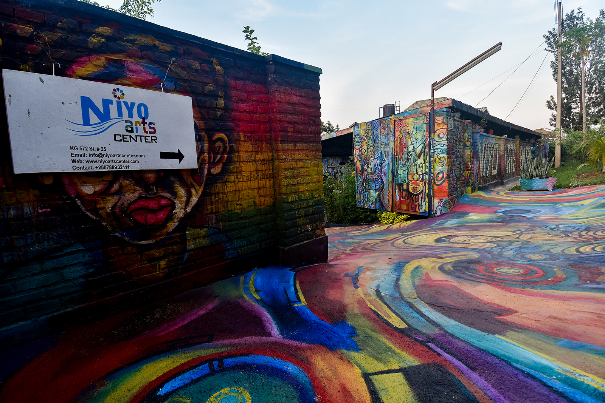

The Kigali Genocide Memorial

Address: KG 14 Ave, Kigali, Rwanda
This is Rwanda's most prominent genocide memorial. When visiting and learning about the sociopolitical landscape of Rwanda, it is impossible to not mention the genocide that occured a little over 30 years ago in 1994. This killed over 1 million people in 100 days. The Memorial highlights the history leading up to the genoice, including how both German and Belgian colonization influenced the viewing of ethnic groups in Rwanda. The suffering of the Tutsi people, how it was ended, perspectives from survivors, and highlighting many of the victims who unfortunately passed away due to the tragedy.
More Information
Ellen DeGeneres Campus of the Dian Fossey Gorilla Fund
Address: HH97+MG, Kinigi, Rwanda
The Ellen DeGeneres Campus uses tourist support to fund education and resarch that helps keep the animals within the national parks safe. Additionally, the campus teaches people about conservation and trains the next generation of scientists and community workers. The capitalization on tourism makes it possible to fund these programs and encourages people to care more about the environment.
More Information
Niyo Arts Center
Address: 338G+GQW, KG 572 St, Kigali, Rwanda
The Niyo Arts Center includes artwork by Rwandan artists. The artwork is available for payment. They also offer painting sessions and opportunities to learn about Rwandan traditional dance and music. This section allows for you to not only learn about the dance and music but participate in the dances and drumming. This is great for musicians, dancers, and other creatives.